268 — Ruta Site Reliability Engineer
Parte: 22 — Especializaciones, certificaciones y práctica profesional
Nivel: intermedio-avanzado · Horas estimadas: 4
Laboratorio: decision · Estado: EXECUTABLE_CORE
🎯 Propósito
La ruta de fiabilidad: responder de que el sistema cumpla lo prometido, con un número acordado y la autoridad para actuar sobre él. La clase da lo que la distingue de «operar bien» —el objetivo negociado, el presupuesto de error y la potestad de frenar—, las competencias que se miden, y su modo de fracaso: convertirse en el equipo que hace las guardias de los demás.
📚 Resultados de aprendizaje
Al finalizar podrás:
- Definir objetivos de nivel de servicio que representen al usuario.
- Usar el presupuesto de error como mecanismo de decisión, no de informe.
- Negociar el número con negocio y con producto, con sus costes.
- Evitar convertirse en el equipo que absorbe la guardia ajena.
- Reconocer el techo de la ruta y qué la continúa.
🧩 Conceptos centrales
| Concepto | Comprensión verificable |
|---|---|
indicador de nivel de servicio |
Medida de algo que el usuario experimenta: éxito de una operación, latencia, frescura. |
objetivo de nivel de servicio |
El valor acordado que ese indicador debe cumplir. Se negocia, no se declara. |
presupuesto de error |
Lo que sobra del objetivo. Se gasta desplegando; agotarlo tiene consecuencias acordadas. |
potestad de frenar |
Autoridad para detener despliegues cuando el presupuesto se agota. Sin ella, el objetivo es decorativo. |
trabajo repetitivo |
Tarea manual sin valor duradero que crece con el sistema. Su límite define esta ruta. |
guardia prestada |
Modo de fracaso en que el equipo de fiabilidad responde de servicios que no construye. |
🧠 Modelo mental
Una especialización combina fundamentos, evidencia de proyectos y juicio bajo restricciones; una insignia sin práctica no sustituye esa combinación.
Aplicado a esta clase, separa siempre cuatro planos: intención (qué necesita el usuario), configuración (qué declaramos), estado observado (qué existe de verdad) y evidencia (cómo sabemos que cumple). Confundirlos produce diseños que se ven correctos en un diagrama pero fallan al operar.
🗺️ Flujo de razonamiento

📖 Desarrollo
1. Qué distingue esta ruta
No es «operar bien»: eso lo hace la parte 21 entera. Lo que define esta ruta son tres cosas que casi nunca están juntas.
1 UN NÚMERO ACORDADO
no «que vaya bien», sino «el 99,9 % de las compras se
completan en menos de 2 segundos»
→ acordado con negocio, no declarado por ingeniería
2 UN MECANISMO QUE CONVIERTE EL NÚMERO EN DECISIONES
el presupuesto de error
→ mientras quede, se despliega con libertad
→ cuando se agota, se para y se arregla
3 Y LA POTESTAD DE APLICARLO
→ sin esto, el objetivo es un informe mensual que nadie
lee
→ y esta es la parte que no es técnica y la que decide
si la ruta existe de verdad
Y el indicador, que es donde se cometen los errores:
UN BUEN INDICADOR
mide lo que el usuario experimenta
se mide donde el usuario está, no en el servidor
tiene un umbral claro de bueno y malo
y su caída significa que alguien está sufriendo
UN MAL INDICADOR
disponibilidad de la máquina
uso de CPU
«la petición devolvió 200»
→ aunque el contenido esté vacío ley 29
y el promedio de latencia
→ la media oculta la cola clase 186
→ la prueba: «si esto empeora, ¿lo nota alguien?»
→ y la inversa, que es la que más falla:
«si algo empeora para el usuario, ¿esto lo refleja?»
Y cómo se elige el objetivo, que se negocia:
NO SE ELIGE «EL MÁS ALTO POSIBLE»
cada nueve adicional multiplica el coste
99,9 % 8,7 h al año de margen
99,95 % 4,4 h
99,99 % 52 min
→ y pasar de 99,9 a 99,99 puede costar más que todo el
servicio
SE ELIGE MIRANDO
qué nota el usuario de verdad
→ si el cliente móvil ya falla el 0,4 % por la red,
un 99,99 % de servidor no lo nota nadie
qué prometen los contratos
qué cuesta cada nivel
y qué disponibilidad tienen las dependencias
clase 185
→ y el objetivo debe ser PEOR que lo que hoy se consigue
por casualidad
→ si el objetivo se cumple siempre sin esfuerzo, no está
midiendo nada útil
2. El presupuesto de error como mecanismo
El presupuesto de error solo sirve si tiene consecuencias acordadas de antemano. Si no, es una métrica más.
CÓMO FUNCIONA
objetivo 99,9 % → presupuesto 0,1 %
en 30 días, unos 43 minutos de fallo total equivalente
cada incidente y cada despliegue fallido lo consumen
y se repone al empezar la ventana siguiente
LAS CONSECUENCIAS, escritas ANTES
presupuesto > 50 % se despliega con libertad; se
pueden asumir riesgos
presupuesto < 25 % solo cambios de bajo riesgo;
revisión más estricta
presupuesto agotado se congelan las funciones
nuevas; el equipo trabaja en
fiabilidad hasta reponerlo
→ y esto último es lo que le da poder
→ y es lo que hay que acordar con producto ANTES de que
ocurra, no durante
Y lo que el mecanismo consigue, que es su verdadero propósito:
CONVIERTE UNA DISCUSIÓN DE OPINIONES EN UNA DE DATOS
antes «hay que ir más despacio» / «hay que entregar»
ahora «queda el 18 % del presupuesto»
y alinea incentivos
a producto le interesa que el sistema sea fiable, porque
si no, se le congelan las funciones
a ingeniería le interesa no ser conservadora de más,
porque el presupuesto sin gastar es margen
desaprovechado
→ y ese segundo punto sorprende: gastar POCO presupuesto
también es una señal
→ significa que se podría entregar más rápido o que el
objetivo está mal puesto
Y los errores más comunes con el presupuesto:
1 NO TENER CONSECUENCIAS
se informa y no pasa nada
→ y entonces es un panel bonito
2 PONER EL OBJETIVO DONDE YA SE CUMPLE
→ presupuesto siempre lleno, nunca decide nada
3 MEDIRLO SOBRE LA VENTANA EQUIVOCADA
30 días móviles funciona bien
→ trimestral esconde; semanal es demasiado ruidoso
4 EXCLUIR INCIDENTES «QUE NO CUENTAN»
→ «esto fue del proveedor»
→ el usuario no distingue de quién fue clase 185
→ y si se excluye, el número deja de representarlo
5 Y TENER DEMASIADOS
→ 3 a 5 objetivos por servicio; más no se gestionan
3. Competencias, niveles y el trabajo repetitivo
Lo que se mide en esta ruta, por nivel.
NIVEL 2 · RESUELVO
define indicadores que representan al usuario
instrumenta y mide con corrección clases 211, 257
diagnostica y arregla clase 258
escribe procedimientos y análisis posteriores
clases 111, 259
y responde de una guardia
NIVEL 3 · DISEÑO
negocia objetivos con negocio y sostiene el número
diseña degradación y vertido de carga clase 262
hace análisis de modos de fallo antes de que ocurran
dimensiona capacidad y márgenes
y dice que no a un despliegue, con argumento
NIVEL 4 · CAMBIO EL SISTEMA
el presupuesto de error se respeta sin discusión porque
la organización lo acordó
la fiabilidad se diseña en los servicios nuevos, no se
añade después
y el trabajo repetitivo baja mientras el sistema crece
Y el límite que define la salud de la ruta:
EL LÍMITE AL TRABAJO REPETITIVO
la práctica clásica: no más del 50 % del tiempo
→ y el resto, en trabajo que reduce el futuro trabajo
y si se pasa
se devuelve la guardia al equipo que construye
o se para de aceptar servicios nuevos
→ este límite es lo que impide el modo de fracaso
→ y hay que escribirlo antes de necesitarlo
Y el modo de fracaso, que es el más frecuente de todas las rutas:
LA GUARDIA PRESTADA
el equipo de fiabilidad acaba respondiendo de servicios
que no construye
cómo empieza
«vosotros sabéis operar mejor»
y el equipo de producto deja de recibir alertas
qué produce
quien construye no sufre lo que construye
→ y entonces no lo arregla clase 111
el equipo de fiabilidad se llena de trabajo repetitivo
y su conocimiento de cada servicio es superficial
cómo se evita
CRITERIOS DE ENTRADA para aceptar un servicio
señales definidas y objetivos acordados
procedimientos ejecutables clase 259
despliegue progresivo y vuelta atrás clase 260
y el equipo que lo construye COMPARTE la guardia
y criterios de SALIDA
→ si el servicio deja de cumplirlos, se devuelve
→ y devolver un servicio es la acción más impopular y más
necesaria de esta ruta
4. Negociar el número y el techo de la ruta
La parte que hace difícil esta especialidad no es medir: es sostener el número cuando incomoda.
CÓMO SE NEGOCIA CON NEGOCIO
no se pregunta «¿qué disponibilidad quieres?»
→ la respuesta siempre es «la máxima»
se pregunta
«¿cuánto vale para el negocio una hora de caída?»
«¿qué prefieres: esta función un mes antes o pasar de
99,9 a 99,95?»
«¿qué le pasa a un usuario cuando esto falla?»
y se presenta el coste de cada nivel
→ con la cifra de la parte 19: la redundancia entre
regiones no es un ajuste, es otro sistema
clase 187
Y cómo se sostiene:
CUANDO EL PRESUPUESTO SE AGOTA Y HAY UN LANZAMIENTO
la conversación no es «¿lo paramos?»
es «acordamos esto; ¿queréis cambiar el acuerdo?»
→ y cambiar el acuerdo es legítimo, si es explícito
→ lo ilegítimo es ignorarlo
y la salida honesta
«podemos lanzarlo si asumimos que el objetivo baja a
99,5 % este trimestre; ¿lo asumimos?»
→ decisión de negocio, registrada
→ el trabajo de esta ruta no es impedir: es hacer la
decisión VISIBLE
Y el techo:
EL TECHO
el sistema cumple, el presupuesto se respeta y el
trabajo repetitivo está bajo control
→ y lo que limita entonces es la arquitectura o la
organización
continuaciones
a ARQUITECTURA clase 272
si el límite es cómo está construido
b PLATAFORMA clase 267
si el límite es que cada equipo lo resuelve solo
c o dirección técnica
si el límite es cómo se priorizan las decisiones
Y la lista de comprobación de la clase:
☐ mis indicadores miden lo que el usuario experimenta
☐ se miden donde el usuario está
☐ el objetivo está acordado con negocio, no declarado
☐ el objetivo no se cumple solo, por casualidad
☐ hay entre 3 y 5 objetivos por servicio
☐ el presupuesto de error tiene consecuencias escritas
antes
☐ no se excluyen incidentes «que no cuentan»
☐ la ventana es de 30 días móviles
☐ existe potestad de frenar y se ha ejercido alguna vez
☐ el trabajo repetitivo tiene límite escrito
☐ hay criterios de entrada y de salida para aceptar
servicios
☐ quien construye comparte la guardia
☐ gastar poco presupuesto también se revisa
Y el cierre que enlaza con la clase siguiente: la fiabilidad responde de que el sistema cumpla; queda quien responde de que un fallo no sea catastrófico ni deliberado. La ruta de seguridad es la materia de la clase 269.
🔬 Ejemplo trabajado
La ruta de fiabilidad en CloudShop: del panel que nadie miraba al presupuesto que paró un lanzamiento. Lo que sigue son los objetivos mal puestos que se corrigieron, la negociación que costó tres reuniones, y el servicio que hubo que devolver.
Punto de partida: los objetivos que no medían nada.
lo que había, 14 objetivos declarados por ingeniería
objetivo valor cumplido en 12 meses
disponibilidad de máquinas 99,95 % 12/12 meses
CPU media < 70 % - 12/12
latencia media < 200 ms - 11/12
errores 5xx < 0,1 % 99,9 % 12/12
...
→ 12 de 14 se cumplían todos los meses
→ y en esos 12 meses hubo 34 incidentes de gravedad alta
→ los objetivos no medían lo que fallaba
Y el ejemplo que lo dejó claro:
el incidente del carrito perdido clase 261
el 9 % de los usuarios perdía la sesión
→ todas las peticiones devolvían 200
→ la latencia, normal
→ la CPU, normal
→ los 14 objetivos, cumplidos
→ el usuario perdía su compra y ningún número lo reflejaba
La corrección: cuatro indicadores por recorrido.
se eligieron por RECORRIDO DE USUARIO, no por servicio
COMPRAR
éxito % de intentos de compra que se completan
latencia % que se completan en < 2 s
BUSCAR Y VER CATÁLOGO
éxito % de búsquedas con resultado
latencia % en < 800 ms
SEGUIMIENTO DE PEDIDO
frescura % de consultas con estado de < 5 min de
antigüedad
DEVOLUCIONES
éxito % de solicitudes que se registran
y se miden en el CLIENTE, no en el servidor
→ y ahí apareció una diferencia que nadie esperaba
Y la diferencia:
```text medido en medido en el servidor el cliente éxito de compra 99,94 % 98,71 %
→ 1,23 puntos de diferencia → causas: plazos del cliente móvil, errores de red del usuario, y una versión de la aplicación con un fallo que reintentaba mal clase 201
→ y el 1,23 % eran unas 4.100 compras al mes → ninguna aparecía en ningún panel
**La negociación del número: tres reuniones.**
```text
reunión 1 ingeniería propone 99,95 % para comprar
negocio dice «¿por qué no 99,99?»
reunión 2 ingeniería lleva el coste
99,9 % sistema actual + trabajo de
fiabilidad ~0 adicional
99,95 % + redundancia de la base entre
zonas y vertido de carga
+14.000 USD/mes
99,99 % + segunda región activa, datos
replicados, ensayos mensuales
+112.000 USD/mes
+ 2 personas
y la pregunta que cambió la conversación
«¿cuánto vale una hora de caída del flujo de
compra?»
→ negocio lo calculó: ~31.000 USD
reunión 3 se acuerda
comprar 99,95 %
buscar 99,9 %
seguimiento 99,5 %
devoluciones 99,5 %
y el razonamiento escrito
99,99 % costaría 1,34 M USD/año para evitar
~7,7 h de caída al año → ~239.000 USD de
impacto
→ no se justifica
Y las consecuencias, acordadas por escrito:
presupuesto > 50 % despliegue libre; se pueden probar
cosas
presupuesto < 25 % solo cambios de bajo riesgo
presupuesto agotado se congelan funciones nuevas del
recorrido afectado hasta reponerlo
y la excepción
producto puede pedir una revisión del objetivo, por
escrito, con la nueva cifra y su vigencia
El trimestre en que se aplicó.
mes 2 el presupuesto de «comprar» cae al 11 %
causa: dos incidentes y tres despliegues fallidos
mes 2 había un lanzamiento previsto para 9 días después
la conversación
no fue «¿lo paramos?»
fue «acordamos congelar; ¿queréis cambiar el acuerdo?»
lo que decidió negocio
el lanzamiento se retrasó 3 semanas
y el equipo dedicó ese tiempo a
la instancia con disco degradado clase 258
la verificación automática tras desplegar
y el vertido de carga clase 262
resultado
presupuesto del mes siguiente 94 %
y el lanzamiento salió sin incidentes
Y el dato que convenció a producto para el trimestre siguiente:
lanzamientos con presupuesto > 50 % 11
con incidente asociado 1
lanzamientos con presupuesto < 25 % 4
con incidente asociado 3
→ el presupuesto predecía el riesgo del lanzamiento
→ y a partir de ahí, producto empezó a mirarlo antes de
planificar fechas
El servicio que hubo que devolver.
criterios de entrada, escritos
señales definidas y objetivos acordados
procedimientos en grado 2 o superior clase 259
despliegue progresivo con vuelta atrás clase 260
y guardia compartida con el equipo que construye
el servicio de recomendaciones entró en el mes 4
cumplía los cuatro
mes 9
interrupciones de guardia por ese servicio 41 %
del total
procedimientos actualizados por su equipo 0
incidentes con acciones cerradas 2/9
y su equipo había dejado de compartir la guardia
se aplicó el criterio de salida
→ se devolvió el servicio a su equipo, con 4 semanas de
aviso
→ conversación muy incómoda
y lo que pasó a los 3 meses
interrupciones de ese servicio -74 %
procedimientos actualizados 6
y su equipo pidió volver a entrar
→ y volvió, cumpliendo los criterios
→ y el mecanismo funcionó: quien construye sufre lo que
construye, y entonces lo arregla clase 111
Las cifras a los 18 meses.
```text antes después objetivos definidos 14 6 que se cumplen siempre sin esfuerzo 12 0 medición en el cliente no sí incidentes de gravedad alta 34/año 13/año incidentes no reflejados en ningún objetivo 26/34 0/13
presupuesto agotado (trimestres) - 2 de 6 congelaciones aplicadas - 2 congelaciones ignoradas - 0 revisiones de objetivo pedidas por producto, por escrito - 1
trabajo repetitivo del equipo 71 % 38 % servicios aceptados - 17 servicios devueltos - 1
**La lección que esta clase deja**: catorce objetivos se cumplían todos los meses mientras ocurrían **34 incidentes graves al año**, porque medían máquinas y no recorridos. Y medir en el cliente en vez de en el servidor reveló **1,23 puntos** de diferencia —unas 4.100 compras al mes— que ningún panel del servidor podía mostrar.
## 🧪 Laboratorio guiado
Ejecuta desde la raíz:
```bash
python classes/part-22-specializations-certifications-career/268-ruta-site-reliability-engineer/lab.py
El laboratorio selecciona el motor de práctica decision y produce
lab_result.json. El escenario, sus comprobaciones y el artefacto esperado corresponden a
esta clase; no requiere credenciales y deja explícito qué debe revalidarse en un sandbox real.
- Lee
exercise.stepsy formula una predicción antes de ejecutar. - Ejecuta la práctica y verifica todos los elementos de
checks. - Provoca el caso de
negative_testy explica la señal observada. - Materializa
sre-planenevidence/usando la plantilla indicada. - Para proveedor real, sigue
sandbox.requires, registra costo y ejecutadestroy.
Evidencia esperada
El artefacto principal es una matriz de decisión ponderada y un ADR. Además, la entrega debe incluir el comando ejecutado, la salida estructurada y una conclusión que no exceda lo observado.
🏆 Reto verificable
Construye sre-plan para el caso CloudShop. Incluye una alternativa descartada,
un supuesto que pueda falsarse, una prueba de fallo y una decisión de rollback.
✅ Criterio de aceptación
- [ ]
lab.pytermina con código 0 y genera JSON válido. - [ ] La entrega conecta al menos tres requisitos con mecanismos verificables.
- [ ] Existe una prueba positiva y una prueba negativa con evidencia.
- [ ] Seguridad, costo y operación aparecen como decisiones, no como anexos.
- [ ] Se declara una limitación y una condición que obligaría a revisar el diseño.
- [ ] Otra persona puede repetir el recorrido sin conocimiento tácito.
⚠️ Errores frecuentes
| Síntoma | Causa probable | Corrección |
|---|---|---|
| Todos los objetivos se cumplen y hay incidentes graves cada mes | Los indicadores miden recursos y no recorridos de usuario | Define indicadores por recorrido, con umbral claro, y comprueba las dos direcciones: si empeora, ¿lo nota alguien? Si el usuario sufre, ¿esto lo refleja? |
| El presupuesto de error se informa y nunca cambia nada | No hay consecuencias acordadas antes ni potestad de aplicarlas | Escribe las consecuencias por tramo antes de necesitarlas y acuérdalas con producto; sin consecuencias es un panel bonito. |
| El equipo de fiabilidad hace las guardias de servicios que no construye | Se aceptaron servicios sin criterios de entrada y quien los construye dejó de recibir alertas | Fija criterios de entrada y de salida, exige guardia compartida y devuelve el servicio cuando dejen de cumplirse. |
| Se discute el objetivo cada vez que hay un lanzamiento | El número se declaró en vez de negociarse con su coste | Lleva el coste de cada nivel y el valor de una hora de caída; y deja que cambiar el acuerdo sea legítimo, pero explícito y escrito. |
| Se excluyen incidentes del cómputo porque fueron del proveedor | Se confunde responsabilidad con experiencia del usuario | El usuario no distingue de quién fue el fallo; si se excluye, el número deja de representarlo y pierde su función. |
| El presupuesto nunca se gasta y el equipo se siente bien | El objetivo está por debajo de lo que se consigue sin esfuerzo, o se está siendo conservador de más | Revisa también el presupuesto sin gastar: indica que se podría entregar más rápido o que el objetivo está mal puesto. |
🛡️ Seguridad, ética y costo
Trabaja con cuentas propias o sandboxes autorizados. No publiques secretos, identificadores reales ni datos personales. Antes de crear recursos pagos define presupuesto, etiquetas y comando de destrucción; después verifica que no queden recursos huérfanos. Los ejemplos locales enseñan contratos, pero no certifican cumplimiento ni disponibilidad de producción.
❓ Preguntas de comprobación
- ¿Qué tres cosas definen esta ruta frente a operar bien?
- ¿Cómo se distingue un buen indicador de uno malo?
- ¿Qué hace útil al presupuesto de error y qué lo convierte en decoración?
- ¿Cómo empieza el modo de fracaso de la guardia prestada y cómo se evita?
- ¿Cómo se negocia un objetivo con negocio sin preguntar qué disponibilidad quiere?
🔗 Referencias
- Beyer, B. y otros (2016). Site Reliability Engineering, caps. sobre SLO y presupuesto de error. https://sre.google/sre-book/service-level-objectives/
- Google (2018). The Site Reliability Workbook, cap. «Implementing SLOs». https://sre.google/workbook/implementing-slos/
- Wilkinson, A. y Hidalgo, A. (2020). Implementing Service Level Objectives. https://www.oreilly.com/library/view/implementing-service-level/9781492076803/
- AWS (2024). Reliability Pillar: workload SLAs and SLOs. https://docs.aws.amazon.com/wellarchitected/latest/reliability-pillar/welcome.html
- Microsoft (2024). Azure Well-Architected Framework: reliability targets. https://learn.microsoft.com/azure/well-architected/reliability/metrics
- Documentación oficial vigente del servicio implementado; registra URL y fecha de consulta.
📥 Descargar: Parte 22 en PDF · Manual integral